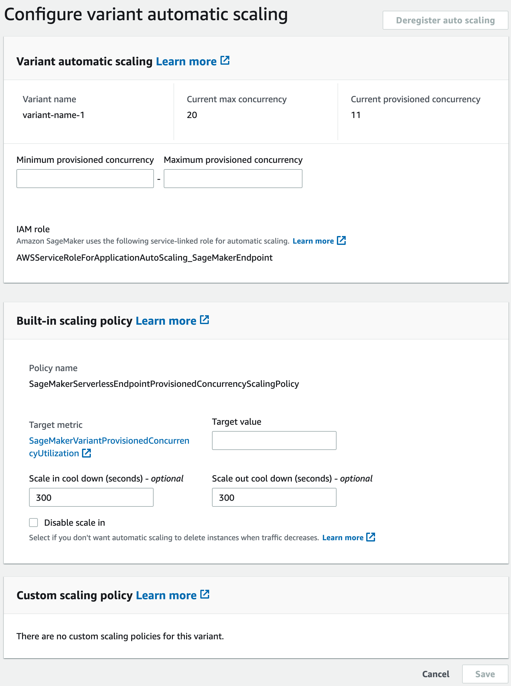

Automatically scale Provisioned Concurrency for a serverless endpoint
Amazon SageMaker automatically scales in or out on-demand serverless endpoints. For serverless endpoints with Provisioned Concurrency you can use Application Auto Scaling to scale up or down the Provisioned Concurrency based on your traffic profile, thus optimizing costs.
The following are the prerequisites to autoscale Provisioned Concurrency on serverless endpoints:
Before you can use autoscaling, you must have already deployed a model to a serverless endpoint with Provisioned Concurrency. Deployed models are referred to as production variants. See Create an endpoint configuration and Create an endpoint for more information about deploying a model to a serverless endpoint with Provisioned Concurrency. To specify the metrics and target values for a scaling policy, you must configure a scaling policy. For more information on how to define a scaling policy, see Define a scaling policy. After registering your model and defining a scaling policy, apply the scaling policy to the registered model. For information on how to apply the scaling policy, see Apply a scaling policy.
For details on other prerequisites and components used with autoscaling, see the Prerequisites section in the SageMaker autoscaling documentation.
Register a model
To add autoscaling to a serverless endpoint with Provisioned Concurrency, you first must register your model (production variant) using AWS CLI or Application Auto Scaling API.
Register a model (AWS CLI)
To register your model, use the register-scalable-target AWS CLI command
with the following parameters:
-
--service-namespace– Set this value tosagemaker. -
--resource-id– The resource identifier for the model (specifically the production variant). For this parameter, the resource type isendpointand the unique identifier is the name of the production variant. For exampleendpoint/MyEndpoint/variant/MyVariant. -
--scalable-dimension– Set this value tosagemaker:variant:DesiredProvisionedConcurrency. -
--min-capacity– The minimum number of Provisioned Concurrency for the model. Set--min-capacityto at least 1. It must be equal to or less than the value specified for--max-capacity. -
--max-capacity– The maximum number of Provisioned Concurrency that should be enabled through Application Auto Scaling. Set--max-capacityto a minimum of 1. It must be greater than or equal to the value specified for--min-capacity.
The following example shows how to register a model named MyVariant
that is dynamically scaled to have 1 to 10 Provisioned Concurrency value:
aws application-autoscaling register-scalable-target \ --service-namespace sagemaker \ --scalable-dimension sagemaker:variant:DesiredProvisionedConcurrency \ --resource-id endpoint/MyEndpoint/variant/MyVariant \ --min-capacity 1 \ --max-capacity 10
Register a model (Application Auto Scaling API)
To register your model, use the RegisterScalableTarget Application Auto Scaling API
action with the following parameters:
-
ServiceNamespace– Set this value tosagemaker. -
ResourceId– The resource identifier for the model (specifically the production variant). For this parameter, the resource type isendpointand the unique identifier is the name of the production variant. For exampleendpoint/MyEndpoint/variant/MyVariant. -
ScalableDimension– Set this value tosagemaker:variant:DesiredProvisionedConcurrency. -
MinCapacity– The minimum number of Provisioned Concurrency for the model. SetMinCapacityto at least 1. It must be equal to or less than the value specified forMaxCapacity. -
MaxCapacity– The maximum number of Provisioned Concurrency that should be enabled through Application Auto Scaling. SetMaxCapacityto a minimum of 1. It must be greater than or equal to the value specified forMinCapacity.
The following example shows how to register a model named MyVariant
that is dynamically scaled to have 1 to 10 Provisioned Concurrency value:
POST / HTTP/1.1 Host: autoscaling.us-east-2.amazonaws.com Accept-Encoding: identity X-Amz-Target: AnyScaleFrontendService.RegisterScalableTarget X-Amz-Date: 20160506T182145Z User-Agent: aws-cli/1.10.23 Python/2.7.11 Darwin/15.4.0 botocore/1.4.8 Content-Type: application/x-amz-json-1.1 Authorization: AUTHPARAMS { "ServiceNamespace": "sagemaker", "ResourceId": "endpoint/MyEndPoint/variant/MyVariant", "ScalableDimension": "sagemaker:variant:DesiredProvisionedConcurrency", "MinCapacity": 1, "MaxCapacity": 10 }
Define a scaling policy
To specify the metrics and target values for a scaling policy, you can configure a
target-tracking scaling policy. Define the scaling policy as a JSON block in a text
file. You can then use that text file when invoking the AWS CLI or the Application Auto Scaling API. To
quickly define a target-tracking scaling policy for a serverless endpoint, use the
SageMakerVariantProvisionedConcurrencyUtilization predefined metric.
{ "TargetValue": 0.5, "PredefinedMetricSpecification": { "PredefinedMetricType": "SageMakerVariantProvisionedConcurrencyUtilization" }, "ScaleOutCooldown": 1, "ScaleInCooldown": 1 }
Apply a scaling policy
After registering your model, you can apply a scaling policy to your serverless endpoint with Provisioned Concurrency. See Apply a target-tracking scaling policy to apply a target-tracking scaling policy that you have defined. If the traffic flow to your serverless endpoint has a predictable routine then instead of applying a target-tracking scaling policy you might want to schedule scaling actions at specific times. For more information on scheduling scaling actions, see Scheduled scaling.
Apply a target-tracking scaling policy
You can use the AWS Management Console, AWS CLI or the Application Auto Scaling API to apply a target-tracking scaling policy to your serverless endpoint with Provisioned Concurrency.
Apply a target-tracking scaling policy (AWS CLI)
To apply a scaling policy to your model, use the put-scaling-policy
AWS CLI; command with the following parameters:
-
--policy-name– The name of the scaling policy. -
--policy-type– Set this value toTargetTrackingScaling. -
--resource-id– The resource identifier for the variant. For this parameter, the resource type isendpointand the unique identifier is the name of the variant. For exampleendpoint/MyEndpoint/variant/MyVariant. -
--service-namespace– Set this value tosagemaker. -
--scalable-dimension– Set this value tosagemaker:variant:DesiredProvisionedConcurrency. -
--target-tracking-scaling-policy-configuration– The target-tracking scaling policy configuration to use for the model.
The following example shows how to apply a target-tracking scaling policy named
MyScalingPolicy to a model named MyVariant. The policy
configuration is saved in a file named scaling-policy.json.
aws application-autoscaling put-scaling-policy \ --policy-name MyScalingPolicy \ --policy-type TargetTrackingScaling \ --service-namespace sagemaker \ --scalable-dimension sagemaker:variant:DesiredProvisionedConcurrency \ --resource-id endpoint/MyEndpoint/variant/MyVariant \ --target-tracking-scaling-policy-configuration file://[file-localtion]/scaling-policy.json
Apply a target-tracking scaling policy (Application Auto Scaling API)
To apply a scaling policy to your model, use the PutScalingPolicy
Application Auto Scaling API action with the following parameters:
-
PolicyName– The name of the scaling policy. -
PolicyType– Set this value toTargetTrackingScaling. -
ResourceId– The resource identifier for the variant. For this parameter, the resource type isendpointand the unique identifier is the name of the variant. For exampleendpoint/MyEndpoint/variant/MyVariant. -
ServiceNamespace– Set this value tosagemaker. -
ScalableDimension– Set this value tosagemaker:variant:DesiredProvisionedConcurrency. -
TargetTrackingScalingPolicyConfiguration– The target-tracking scaling policy configuration to use for the model.
The following example shows how to apply a target-tracking scaling policy named
MyScalingPolicy to a model named MyVariant. The policy
configuration is saved in a file named scaling-policy.json.
POST / HTTP/1.1 Host: autoscaling.us-east-2.amazonaws.com Accept-Encoding: identity X-Amz-Target: AnyScaleFrontendService.PutScalingPolicy X-Amz-Date: 20160506T182145Z User-Agent: aws-cli/1.10.23 Python/2.7.11 Darwin/15.4.0 botocore/1.4.8 Content-Type: application/x-amz-json-1.1 Authorization: AUTHPARAMS { "PolicyName": "MyScalingPolicy", "ServiceNamespace": "sagemaker", "ResourceId": "endpoint/MyEndpoint/variant/MyVariant", "ScalableDimension": "sagemaker:variant:DesiredProvisionedConcurrency", "PolicyType": "TargetTrackingScaling", "TargetTrackingScalingPolicyConfiguration": { "TargetValue": 0.5, "PredefinedMetricSpecification": { "PredefinedMetricType": "SageMakerVariantProvisionedConcurrencyUtilization" } } }
Apply a target-tracking scaling policy (AWS Management Console)
To apply a target-tracking scaling policy with the AWS Management Console:
-
Sign in to the Amazon SageMaker console
. -
In the navigation panel, choose Inference.
-
Choose Endpoints to view a list of all of your endpoints.
-
Choose the endpoint to which you want to apply the scaling policy. A page with the settings of the endpoint will appear, with the models (production variant) listed under Endpoint runtime settings section.
-
Select the production variant to which you want to apply the scaling policy, and choose Configure auto scaling. The Configure variant automatic scaling dialog box appears.
 -
Enter the minimum and maximum Provisioned Concurrency values in the Minimum provisioned concurrency and Maximum provisioned concurrency fields, respectively, in the Variant automatic scaling section. Minimum Provisioned Concurrency must be less than or equal to maximum Provisioned Concurrency.
-
Enter the target value in the Target value field for the target metric,
SageMakerVariantProvisionedConcurrencyUtilization. -
(Optional) Enter scale in cool down and scale out cool down values (in seconds) in Scale in cool down and Scale out cool down fields respectively.
-
(Optional) Select Disable scale in if you don’t want auto scaling to delete instance when traffic decreases.
-
Select Save.
Scheduled scaling
If the traffic to your serverless endpoint with Provisioned Concurrency follows a routine pattern you might want to schedule scaling actions at specific times, to scale in or scale out Provisioned Concurrency. You can use the AWS CLI or the Application Auto Scaling to schedule scaling actions.
Scheduled scaling (AWS CLI)
To apply a scaling policy to your model, use the
put-scheduled-action AWS CLI; command with the following parameters:
-
--schedule-action-name– The name of the scaling action. -
--schedule– A cron expression that specifies the start and end times of the scaling action with a recurring schedule. -
--resource-id– The resource identifier for the variant. For this parameter, the resource type isendpointand the unique identifier is the name of the variant. For exampleendpoint/MyEndpoint/variant/MyVariant. -
--service-namespace– Set this value tosagemaker. -
--scalable-dimension– Set this value tosagemaker:variant:DesiredProvisionedConcurrency. -
--scalable-target-action– The target of the scaling action.
The following example shows how to add a scaling action named
MyScalingAction to a model named MyVariant on a
recurring schedule. On the specified schedule (every day at 12:15 PM UTC), if
the current Provisioned Concurrency is below the value specified for
MinCapacity. Application Auto Scaling scales out the Provisioned Concurrency to the
value specified by MinCapacity.
aws application-autoscaling put-scheduled-action \ --scheduled-action-name 'MyScalingAction' \ --schedule 'cron(15 12 * * ? *)' \ --service-namespace sagemaker \ --resource-id endpoint/MyEndpoint/variant/MyVariant \ --scalable-dimension sagemaker:variant:DesiredProvisionedConcurrency \ --scalable-target-action 'MinCapacity=10'
Scheduled scaling (Application Auto Scaling API)
To apply a scaling policy to your model, use the PutScheduledAction
Application Auto Scaling API action with the following parameters:
-
ScheduleActionName– The name of the scaling action. -
Schedule– A cron expression that specifies the start and end times of the scaling action with a recurring schedule. -
ResourceId– The resource identifier for the variant. For this parameter, the resource type isendpointand the unique identifier is the name of the variant. For exampleendpoint/MyEndpoint/variant/MyVariant. -
ServiceNamespace– Set this value tosagemaker. -
ScalableDimension– Set this value tosagemaker:variant:DesiredProvisionedConcurrency. -
ScalableTargetAction– The target of the scaling action.
The following example shows how to add a scaling action named
MyScalingAction to a model named MyVariant on a
recurring schedule. On the specified schedule (every day at 12:15 PM UTC), if
the current Provisioned Concurrency is below the value specified for
MinCapacity. Application Auto Scaling scales out the Provisioned Concurrency to the
value specified by MinCapacity.
POST / HTTP/1.1 Host: autoscaling.us-east-2.amazonaws.com Accept-Encoding: identity X-Amz-Target: AnyScaleFrontendService.PutScheduledAction X-Amz-Date: 20160506T182145Z User-Agent: aws-cli/1.10.23 Python/2.7.11 Darwin/15.4.0 botocore/1.4.8 Content-Type: application/x-amz-json-1.1 Authorization: AUTHPARAMS { "ScheduledActionName": "MyScalingAction", "Schedule": "cron(15 12 * * ? *)", "ServiceNamespace": "sagemaker", "ResourceId": "endpoint/MyEndpoint/variant/MyVariant", "ScalableDimension": "sagemaker:variant:DesiredProvisionedConcurrency", "ScalableTargetAction": "MinCapacity=10" } } }
Delete a scaling policy
You can delete a scaling policy with the AWS Management Console, the AWS CLI, or the Application Auto Scaling API. For more information on deleting a scaling policy with the AWS Management Console, see Delete a scaling policy in the SageMaker autoscaling documentation.
Delete a scaling policy (AWS CLI)
To apply a scaling policy to your model, use the delete-scaling-policy
AWS CLI; command with the following parameters:
-
--policy-name– The name of the scaling policy. -
--resource-id– The resource identifier for the variant. For this parameter, the resource type isendpointand the unique identifier is the name of the variant. For exampleendpoint/MyEndpoint/variant/MyVariant. -
--service-namespace– Set this value tosagemaker. -
--scalable-dimension– Set this value tosagemaker:variant:DesiredProvisionedConcurrency.
The following example deletes scaling policy named MyScalingPolicy from
a model named MyVariant.
aws application-autoscaling delete-scaling-policy \ --policy-name MyScalingPolicy \ --service-namespace sagemaker \ --scalable-dimension sagemaker:variant:DesiredProvisionedConcurrency \ --resource-id endpoint/MyEndpoint/variant/MyVariant
Delete a scaling policy (Application Auto Scaling API)
To delete a scaling policy to your model, use the DeleteScalingPolicy
Application Auto Scaling API action with the following parameters:
-
PolicyName– The name of the scaling policy. -
ResourceId– The resource identifier for the variant. For this parameter, the resource type isendpointand the unique identifier is the name of the variant. For exampleendpoint/MyEndpoint/variant/MyVariant. -
ServiceNamespace– Set this value tosagemaker. -
ScalableDimension– Set this value tosagemaker:variant:DesiredProvisionedConcurrency.
The following example uses the Application Auto Scaling API to delete a scaling policy named
MyScalingPolicy from a model named MyVariant.
POST / HTTP/1.1 Host: autoscaling.us-east-2.amazonaws.com Accept-Encoding: identity X-Amz-Target: AnyScaleFrontendService.DeleteScalingPolicy X-Amz-Date: 20160506T182145Z User-Agent: aws-cli/1.10.23 Python/2.7.11 Darwin/15.4.0 botocore/1.4.8 Content-Type: application/x-amz-json-1.1 Authorization: AUTHPARAMS { "PolicyName": "MyScalingPolicy", "ServiceNamespace": "sagemaker", "ResourceId": "endpoint/MyEndpoint/variant/MyVariant", "ScalableDimension": "sagemaker:variant:DesiredProvisionedConcurrency", }
Deregister a model
You can deregister a model with the AWS Management Console, the AWS CLI, or the Application Auto Scaling API.
Deregister a model (AWS CLI)
To deregister a model from Application Auto Scaling, use the deregister-scalable-target
AWS CLI; command with the following parameters:
-
--resource-id– The resource identifier for the variant. For this parameter, the resource type isendpointand the unique identifier is the name of the variant. For exampleendpoint/MyEndpoint/variant/MyVariant. -
--service-namespace– Set this value tosagemaker. -
--scalable-dimension– Set this value tosagemaker:variant:DesiredProvisionedConcurrency.
The following example deregisters a model named MyVariant from Application Auto Scaling.
aws application-autoscaling deregister-scalable-target \ --service-namespace sagemaker \ --scalable-dimension sagemaker:variant:DesiredProvisionedConcurrency \ --resource-id endpoint/MyEndpoint/variant/MyVariant
Deregister a model (Application Auto Scaling API)
To deregister a model from Application Auto Scaling use the DeregisterScalableTarget
Application Auto Scaling API action with the following parameters:
-
ResourceId– The resource identifier for the variant. For this parameter, the resource type isendpointand the unique identifier is the name of the variant. For exampleendpoint/MyEndpoint/variant/MyVariant. -
ServiceNamespace– Set this value tosagemaker. -
ScalableDimension– Set this value tosagemaker:variant:DesiredProvisionedConcurrency.
The following example uses the Application Auto Scaling API to deregister a model named
MyVariant from Application Auto Scaling.
POST / HTTP/1.1 Host: autoscaling.us-east-2.amazonaws.com Accept-Encoding: identity X-Amz-Target: AnyScaleFrontendService.DeregisterScalableTarget X-Amz-Date: 20160506T182145Z User-Agent: aws-cli/1.10.23 Python/2.7.11 Darwin/15.4.0 botocore/1.4.8 Content-Type: application/x-amz-json-1.1 Authorization: AUTHPARAMS { "ServiceNamespace": "sagemaker", "ResourceId": "endpoint/MyEndpoint/variant/MyVariant", "ScalableDimension": "sagemaker:variant:DesiredProvisionedConcurrency", }
Deregister a model (AWS Management Console)
To deregister a model (production variant) with the AWS Management Console:
-
Open the Amazon SageMaker console
. -
In the navigational panel, choose Inference.
-
Choose Endpoints to view a list of your endpoints.
-
Choose the serverless endpoint hosting the production variant. A page with the settings of the endpoint will appear, with the production variants listed under Endpoint runtime settings section.
-
Select the production variant that you want to deregister, and choose Configure auto scaling. The Configure variant automatic scaling dialog box appears.
-
Choose Deregister auto scaling.